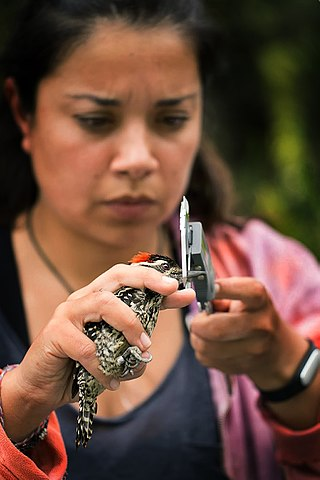
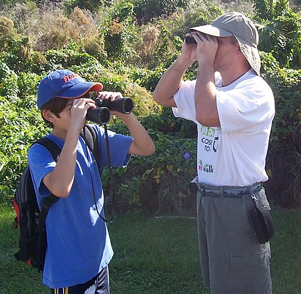

 Ornithology is a branch of zoology that concerns the study of birds. The word “ornithology” derives from the ancient Greek ὄρνις ornis (“bird”) and λόγος logos (“rationale” or “explanation”). Several aspects of ornithology differ from related disciplines, due partly to the high visibility and the aesthetic appeal of birds. Most marked among these is the extent of studies undertaken by amateurs working within the parameters of strict scientific methodology. The science of ornithology has a long history and studies on birds have helped develop several key concepts in evolution, behaviour and ecology such as the definition of species, the process of speciation, instinct, learning, ecological niches, guilds, island biogeography, phylogeography and conservation. While early ornithology was principally concerned with descriptions and distributions of species, ornithologists today seek answers to very specific questions, often using birds as models to test hypotheses or predictions based on theories. Most modern biological theories apply across taxonomic groups and the number of professional scientists who identify themselves as “ornithologists” has therefore declined. A wide range of tools and techniques are used in ornithology, both inside the laboratory and out in the field, and innovations are constantly made. The study of birds in the field was helped enormously by improvements in optics. Photography made it possible to document birds in the field with great accuracy. High power spotting scopes today allow observers to detect minute morphological differences that were earlier possible only by examination of the specimen in the hand. The capture and marking of birds enables detailed studies of life-history. Techniques for capturing birds are varied and include the use of bird liming for perching birds, mist nets for woodland birds, cannon netting for open area flocking birds, the bal-chatri trap for raptors, decoys and funnel traps for water birds.
Birdwatching, or birding, is a form of wildlife observation in which the observation of birds is a recreational activity or citizen science. It can be done with the naked eye, through a visual enhancement device like binoculars and telescopes, by listening for bird sounds, or by watching public webcams. Birdwatching often involves a significant auditory component, as many bird species are more easily detected and identified by ear than by eye. Most birdwatchers pursue this activity for recreational or social reasons, unlike ornithologists, who engage in the study of birds using formal scientific methods. Many birdwatchers occupy themselves with observing local species (birding in their “local patch”), but may also make specific trips to observe birds in other locales. The most active times of the year for birding in temperate zones are during the spring or fall migrations when the greatest variety of birds may be seen. On these occasions, large numbers of birds travel north or south to wintering or nesting locations.  Early mornings are typically better as the birds are more active and vocal making them easier to spot. Certain locations such as the local patch of forest, wetland and coast may be favoured according to the location and season. Seawatching is a type of birdwatching where observers based at a coastal watch point, such as a headland, watch birds flying over the sea. This is one form of pelagic birding, by which pelagic bird species are viewed. Another way birdwatchers view pelagic species is from seagoing vessels.